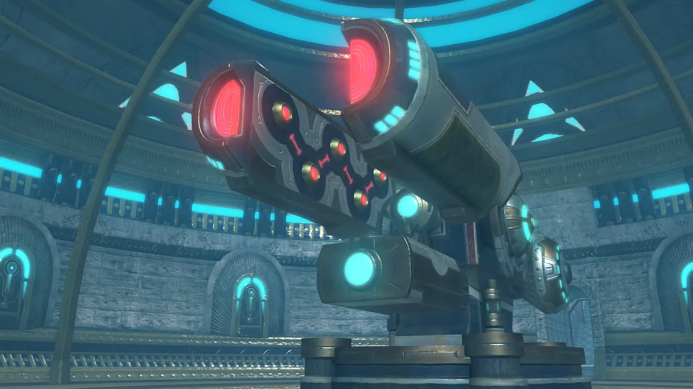
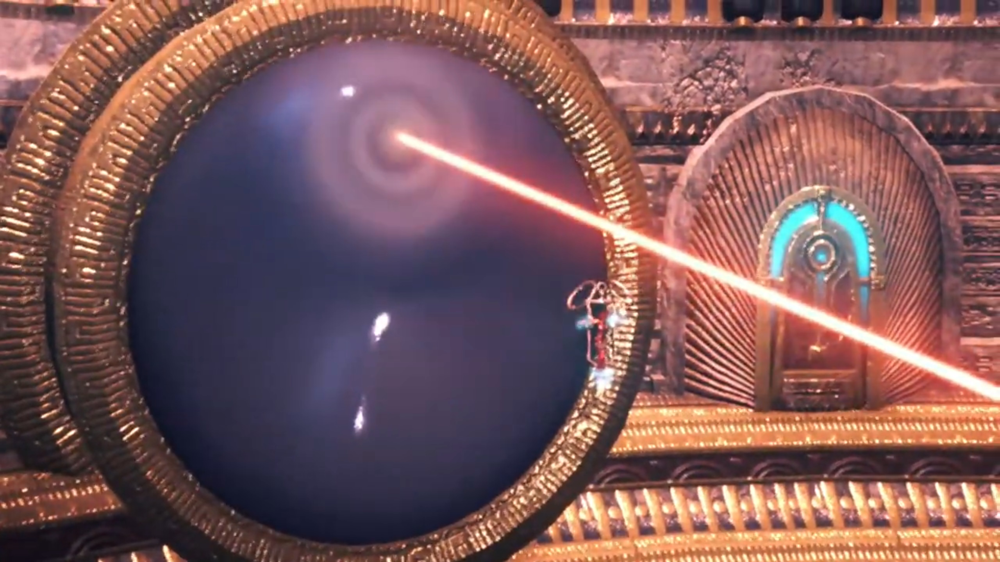
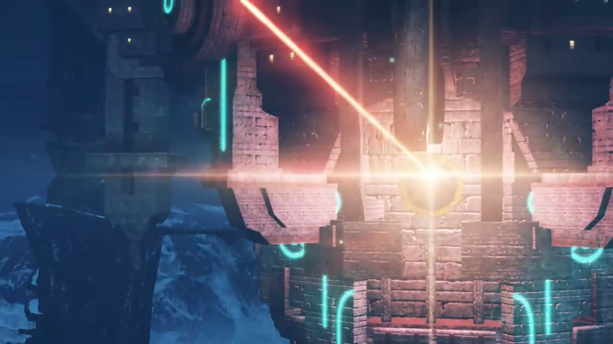
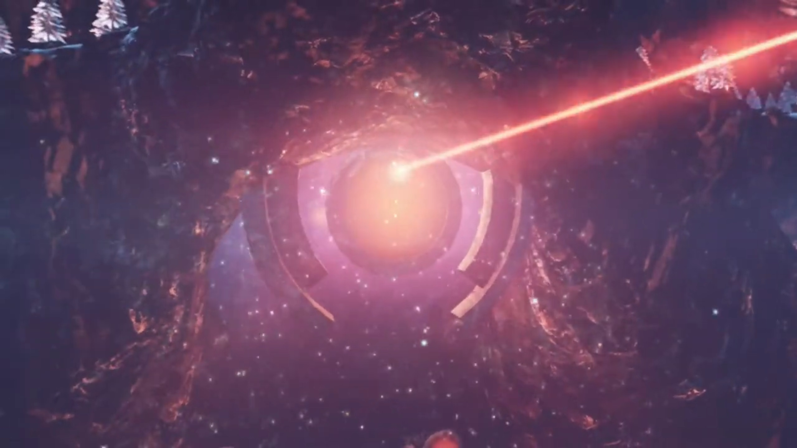
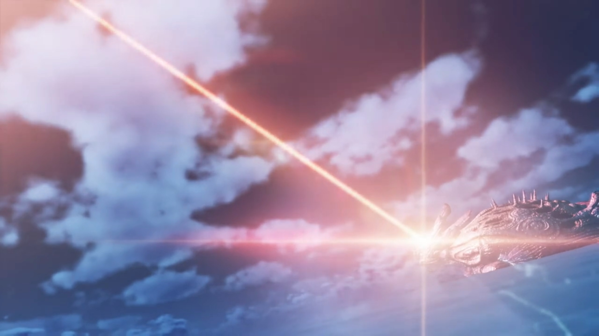

Escaping
The few-inches-thick metallic high-tech prison door was lined with many blue squares. Ether flowed in tanks surrounding the prison, drawn from elsewhere, and transferred their energy to the door. However hard Rex tried swinging his sword at it, it just wouldn't budge. A membrane on its surface prevented the sword from even touching the door, deflecting him with every yield. Yet he wouldn't stop trying, not until he rescued Pyra. Nia folded her arms and watched; was there any use?
"UKH!!!"
Each time he knocked, the observing Dromarch got more information, and the puzzle fits together as he explained, "It appears the flow of ether energy is being blocked off."
"DAMMIT!!!" He sheathed his sword, seeing his action caused no avail, worriedly voiced, "While we're doing this, Pyra is...! We have to do something!"
Gramps consoled, "There is no point, Rex. You're just wasting your strength."
Dromarch continued his observations, "Both the walls and floor are built to withstand great force. We- cannot make a dent in them."
Nia urged, "Let's calm down a bit, Rex. If we think calmly, we'll come up with something! Grr!" She turned to the other 4, gathered around the corner, as if they weren't the ones being captured, shouted at them, "Hey, you lot! Can you try to help us out here?!"
Mòrag: "Your efforts are pointless. The way they built this place... It's essentially- one- giant- stasis- web."
That reminded her, "Stasis web? Like those nets you used in Torigoth?"
She nodded. "To lock Drivers up together with their Blades, and even leave us our weapons, they must have the utmost confidence. Perhaps... we could break through, given enough time... But by then it will be too late, and the Aegis will be disposed of."
"'Disposed of'...?" She jumped on her feet, "That's all the more reason you should give us a bloody hand!"
She shook her head, "I said it's pointless."
"Pfft!"
"We won't get anywhere... with brute force, that is."
Her eyes widened. "Huh?" She watched the grin growing on Mòrag's face.
Zeke and Pandoria was at the top of the castle, overlooking the square alone. From what his dad revealed earlier, the more he thought about it, how darkness casted the nation's fate, ruled by such dark royal family. The whole nation felt like a liar, a cheat. And the poor people out there don't even know a thing, yet they suffered this fate for the last 500 years while they feasted away their produce! But no, he's not ready to give up. There should be a way...
"So what now, my Prince?"
"This pisses me right off..."
"Um, say what?"
"I said, I'm pissed off! Doing it for the world, my arse. How self-serving can you get...?"
"How d'you mean?"
"This country's strangling itself to death with ITS OWN WEB OF LIES AND EXCUSES!!! But just maybe... our chum could break it free..."
"Rex could?"
"No faith, eh?"
"Hey, whatever. If you believe in him, my Prince, I'm with you all the way."
"That kid's heart is pure. Too pure for his own good, sometimes. But isn't it our duty as adults to give him a little help with that?"
"Pro-bably... You know, this is what I like about you."
He appreciated the help, but "This won't be easy..."
"Oh, quit it with your drama! When is anything ever easy for you?"
"HAH! Heh. Let's go!" And they headed back into the castle.
Back in the cell, Tora and Mòrag were meddling with Poppi while the others watched. Mòrag made the call, "OK, that should do it."
Tora: "Preparations complete!"
Rex wondered, "What's going on? Tora?"
Time to show off. He started slow, "Ohoho! Both Drivers and Blades, use- ether energy to deploy Arts, yes?"
Nia urged impatiently, "You can skip the lecture, Tora. Everyone knows that."
"But right now, friends cannot, yes?" He wasn't keen on skipping and fast-forwarding -- the punch line must be best.
Rex agreed, "Yeah, there's something about this room..."
"Ohohoho! But Rex-Rex and friends forgetting one- very important thing!"
Nia lost her patience, "Hurry up, would you? Just spit it out, furball!"
"Could be- friends forgetting, Poppi is artificial Blade?"
Rex don't understand, "Why would we forget that? She's been with us all this time... Wait! I get it! Her ether furnace!"
Poppi nodded, "Rex correct. Thanks to friend Mòrag, Poppi now able to generate own supply of ether energy. Nothing barrier can do anything about."
He finally blurted out, "Tora transfer crystal from sword of Mòrag- to Biter- of- Poppi. That crystal have enough energy stored for one use of Arts. And Biter of Poppi use Earth element. So, through synergy with Fire element of Mòrag, power of Arts is amplified!"
Mòrag added, "If we hit it straight on, I doubt the door can withstand that."
Nia was confused, "Wait a minute, you stored energy in that crystal? How is that possible with a barrier?"
The wise Dromarch already got his eureka moments, "AHA!!! Lady Mòrag has not used a single Art since we arrived in this place!"
"Whuh?"
"I had my suspicions- ever since we entered the palace. So- I secretly asked Tora to refrain from using any Arts either."
Tora now felt so clever, "OHOHOHOH!!!"
Gramps: "I see now. If our enemies knew Poppi retains her power inside the barrier, they would keep us on a tighter leash."
Mòrag: "Exactly. Here goes. Step back."
Poppi walked forward to prepare herself when Rex shouted at them, "HOLD UP! If you transfer the crystal from the sword, what will you fight with?"
She looked at him like looking at an idiot, "I can generate a new one from Brighid's core! Pfft! Don't tell me... you didn't know about that."
His eyes widened with curiosity, "What..."
Nia was impressed, "Seriously? You don't even know how Blade weapons work? Give me a break."
"How... would I know something like that?! I've never... lost or broken my weapon!"{{footnote: No he did, when Jin slashed it; but alas, he was dead before the sword was broken, and he was revived after the sword recovered, so he didn't know.}}
Brighid: "Then I suppose I cannot blame you."
Mòrag: "Moving along, then... Tora, Poppi, please?"
"With pleasure!"
"Poppi power!" His biter activated as the hatch opened up. "Jet Biter!" The bomb stored within launched itself straight at the door. Flame and smoke engulfed the door, and the door slammed against the outside wall. Everyone's smile tightened as they saw hope returning to their side.
Tora: "We- did it!"
Poppi: "We the best!"
Gramps warned, "You made quite some noise, too. It won't be long before the guards arrive!"
Rex: "Good point!"
Dromarch suggested their next step, "Lady Pyra was taken below. Mayhap... somewhere beneath the palace?"
"Got it!"
On their way to where they think Pyra was, encounters with guards were inevitable. At one such hall, both sides were about to start battling when the Ultimate Lightning Fury Slash fell the soldiers. Rex eyes widened, and his lips jutted up, as he saw the two. "Zeke! Pandoria!"
They were surprised, "Oh, what? We came all this way to bust you out! How inconsiderate!" that you got out yourself before we save you!
"You kept us waiting! Won't you... get in trouble- for helping us?"
"Ahhhh, I'm the prodigal son anyhow. It can't get any worse."
"Where's Pyra?"
Pandoria already mapped it out, "This way. Follow us."
On a hallway that bridged between two buildings, no guards were coming after them yet, nor blocking their way. Torches along the pillars lit their way. Rex suddenly dropped to the floor as he puffed softly, "Ow-ow-ow-ow-ow"
"You all right?" asked Zeke.
"I'm fine. It's just a scratch." He stood back up, to not kept them worried.
"Honestly, though, chum, are you ever NOT getting scratched up?"
"Ever since Pyra gave me half her life force, and we swore to reach Elysium, things have been rough. But..."
He recalled how, after escaping Torigoth, they bandaged up with the same wounds. Her scratches. Her eyes. Her emotions.
"I'm actually glad! They feel like a sign of... our bond, I guess? Something special we share, as Driver and Blade."
Zeke's irises tightened. Can't deny that, but... both of you feel hurt at the same time, though. To go through the pain together, when a Driver sought to protect his/her Blade? Perhaps it worked both ways.
"Urr... nghhhh..." She woke up from the devastating attack earlier. She looked around, wondered, "Where...?"
Mythra already observed earlier, answered her, "Strung up in some kind of restraint. Look ahead..."
"Uh!" She immediately noticed the ancient-built cannon, with its barrel split into half, and balls seeming uncharged facing each other within the walls of the barrel. "An ether accelerator. I've seen one like it before, in old Torna. it certainly seems like they want us gone for good... So... if we cranked up the output and really focused it, we could probably manage one strike."

"If the people here... really are the descendants of the Tornans, then I... have a message for them that I must pass on." Even if she's gonna die after that.
"In that case, I'll leave it to you."
"Thank you, Mythra."
"He's here." The king, accompanied by some soldiers, walked along the foot of the cannon. The disk it was supported on was surrounded by a moat of ether.
The king started with fake guilt, ended unwavering, "I apologize for this, noble Aegis. I have no personal grievance with you. However, for the sake of this world, you must be destroyed where you stand."
"Is that truly your desire, Your Majesty?" Pyra cried out.
"I believe you desired the same thing yourself, once. Is that not why you disappeared from history, along with Addam the hero?"
"'Ugh..." She can't deny.
The king ordered, "Begin." The soldiers nodded and went to the control panel. Energy was drawn in from its reserves; the mere heat released by the mechanism shone the room bright red. The balls within the barrel gathered flames that joined with the other side. Pyra watched it gathered energy in silence.
"PYRAAAAAAA!!!" Her eyes lit up when Rex's voiced echoed in the distance.
She had already prepared to die, but now she felt content. Even if he was late, at least, at least let me see him one more time. "Rex!"
Zeke introduced, "The ether accelerator."
Nia don't understand, "The what now?"
"It's a weapon from long ago... designed to use Genbu's ether energy for destruction. I never DREAMED they'd fully restore it... My old man... He's gonna use it to kill Pyra!" The king did noticed them; he stood back as the soldiers came for the group. "No matter how strong she is, there'd be no coming back from that!"
Rex: "In that case, we can't let him use it!" And they prepared for battle.
The time was nigh. The charging up was almost completed as the flames within the barrel grew brighter and brighter. Pyra looked depressed, abandoned all hope. Rex and the group were faced with waves and waves of soldiers, many against one. "Argh! There's too many of them!"
Zeke ushered, "Hurry, or Pyra's toast!"
"I know that! It's just..."
The king wept an insincere tear, "Forgive me." He raised his hand, and the soldier pulled down the handle.
"Dammit! Pyra!"
"I won't let you..!" He deftly evaded the soldiers, jumped in the air and aimed for the cannon, stuck his sword into the left barrel with his Ultimate Lightning Fury Slash. Alas, the electricity he released "IT'S NOT ENOUGH!!!"
Tora ordered, "Poppi! ACTIVATE QT MODE!!! LIFT UP FROM BELOW!!!"
"UNDERSTOOD, MASTERPON!!!" She flew in the air where the soldiers couldn't reach, swooshed along the circumference of the disk, and got below the end tip of the box below the barrel{{footnote: Look carefully, there's a box below the splitted-barrel. Unfortunately, because one don't know what's that for, one had no specifics to explain.}}. With full blast from the rocket blasters below her feet, she pushed and pushed and pushed.
"DO IT, POPPIIIIII!!!!!"
"HEEEEEEAAAAAAVVVVVEEEEEE!!!! HOOOOOOO!!!!" The angle of the cannon changed as it aimed for the ceiling, away from Pyra. The king could do nothing to stop it, while the soldiers by his side backed a few steps in case it toppled. Zeke pulled his sword away and jumped, while Pyra closed her eyes, just before the ether beam zwyrred through a convex lens on the ceiling to outside the castle. Where it shot, there was an even larger convex lens along the way, built on top of the mountains some distance outside the town, amplifying the beam. From an even outer view, on Genbu's head, it closed its eyes as the blindingly bright light shot through to the sky, like a beaming beacon that revealed its location to everyone else living in Alrest.




When the energy finished releasing, Poppi released her push and the cannon smashed back down on the disk, shaking it. The soldiers stopped fighting them, couldn't took their eyes off the nervous, or rather, excited, moments. Nia exclaimed, "It missed? They did it, Rex! They stopped it!" Only the king's gloomy outlook could explain how disappointed he felt.
Rex exclaimed, "Yeah!"
Zeke launched once more Ultimate Lightning Fury Slash and sliced through the chains that held Pyra. "HYAHHHHH!!!" The hero of the day, he was too handsomely showing off he couldn't catch Pyra dropping to the ground.
Rex went for his partner instead, took her in his arms, "PYRAAAAAA!!!" The rest gathered around to check her status. She opened her eyes and smiled at him, and he felt relief.
But they'd forgotten someone. "Five hundred years... For five hundred years, we Tantalese have concealed- the Omega Fetter... Do you know why?"
"Ummm..."
"Our old homeland, Torna, was destroyed, in the Aegis War. Our hero, Addam, also- failed- to return... You must understand, old Torna as a country was united around the Hero. But our ancestors, less so..."
Inside the room with the various possessions, Zeke questioned his dad, "What're you saying? That we're not Addam's bloodline?"
"Precisely. In Torna, our family were just a cadet branch. We only gained our current position in the confusion of the war's aftermath."
"But then, we're just a bunch of USERPERS!!!"
The king tightened his eyebrows, explained himself and his ancestors off, "They were desperate times. We had no choice! The nation must continue at all costs!"
"Even if it meant claiming Addam's name?"
"With its guiding force gone, much blood was spilled in Torna. We did what had to be done to reunite it under the new banner of Tantal..."
The story took so long that evening turned night. Mòrag commented, "Legends of the hero who saved the world, are deeply ingrained in people's hearts. And you used them for your own political agenda?"
"Even so, all was done in the name of saving the world from burning once more."
Zeke felt like vomiting hearing such excuses, spit out, "Don't you dare try and sugercoat it. Short story is, they saw an opportunity to gain influence, and they took it! Grrrrr!!!"
"That is the way of the world."
Brighid suspected that "Mor Ardain could easily take a similar path."
Mòrag agreed, "Yes. We are in no position to condemn them outright."
Nia wondered, "So did this Addam guy reaaaally never return?"
"Indeed. The records indicate- he went missing immediately- after sealing away the Aegis. It is likely he simply perished- during the journey home."
"He didn't just go missing." Pyra spoke out.
"What did you say, Aegis?"
"Addam... He had foreseen... everything. He knew what would happen to the people- after the kingdom fell. But... he chose not to return."
The king was surprised, "Addam left us of his own will? But why?"
Pyra removed her left earring and took it in her hands. Addam had left a holograph within it, a recorded message. "Hear me, my scions. I- am Addam- Origo. This day I seal the Aegis- away from the world. But this seal- is not for eternity. In anticipation- of the day that humanity becomes worthy of the Aegis's power, I entrust her to posterity. She is our hope. When mankind has matured, and learned to live better lives, she will answer your call, and return to you. Trusting that day will come, I leave my final wish to you..." At the end of the recording; she put it back on.
She continued, "Addam foresaw- much confusion and hardship in the world ahead. And when I seemed unsure, he told me something. 'This, is a Trial.'"
"Is me sleeping a part of the trial?" She felt so scared going in herself, into the dark nights, awake in her dreams that shall last for 500 years, alone.
"That's right. It's a trial for us humans. One we must overcome ourselves. If we cannot do that, we don't deserve to live alongside you."
The king got it, "Live alongside..."
"To be honest, I-I still don't fully understand what he meant by that. Whether he simply meant the coexistence of humans and Blades, or something more... But I think he made a- difficult choice. For the sake of everyone's survival."
While they were busy speaking, the ether flowing through the Castle got disturbed for a moment, and started turning red as they stopped flowing. The ground started shaking, attracting their attention. "Whoa!" Rex wondered what happened.
Looking out the window, large amount of ether started being drawn away from Genbu. The blizzard got worse. A soldier have reports, spoke quickly, "Your Majesty!"
"What is this?"
"It's Genbu! It's broken free of our control... and started to dive into the clouds!"
"What? Are you certain?!"
"Ungh!" Pandoria suddenly felt a jolt in her heart as she went to the floor.
"PANDY!!" He tried to assess her situation.
"Oh... oh, no..."
Dromarch wondered, "What exactly is happening?"
Zeke hypothesized, "Could it be... that blast?" Then he stood up.
Nia noted, "What is he..."
Zeke explained, "Tantal keeps Genbu under control using the Omega Fetter. But firing the ether accelerator... it could've created a counter-flow in Genbu's ether conduits, causing a critical overload."
Rex summed it up, "So Genbu's broken?"
Pandora shared as she panicked, "Oh no. My words can't reach him anymore. Genbu is just going to dive deeper and deeper... then..."
Zeke: "DUMB OLD- GIT!!! That's what happened when you use ANTIQUATED PARTS!!!" Just then, the Titan started shaking.
Rex remembered, "The Cloud Sea... has a similar density to water. As we dive, the pressure will keep building. By 500 peds, a human would be crushed completely..."
Dromarch added, "And all that force will weigh down on Genbu?"
Zeke was thinking for possible solution, asked the soldiers, "What's our depth now?"
Without the need to check, he sensed it, "Twenty-two hundred peds, Sir! We are diving at a rate of 120 peds per minute!"
"And Genbu's depth limit?"
"25,000, give or take..."
"That'd give us... just over 3 hours."
Nia was impressed, "Whoa, Shellhead. Good at maths!"
"Bite me." The floor continued shaking, telling them their time is nigh if they don't move now. Glass started to shatter as atmospheric pressure built up in compressed air. Ears starting to felt hurt. "This ain't good... Hey, chum. There's a pressure-resistant pod, in the palace's southern tower. You guys, at least, should get in and escape."
"What about you and everyone else?"
"Don't- worry about us."
"How can I possibly not worry about you?! Isn't there any other way? Some way to save everyone?!"
"Only Pandoria can tell Genbu what to do. If it won't budge for her, it's no use." She was on the floor, trying hard to communicate to no avail. "Apart from that, all we can do is try to evacuate as many people as we can... But with just three hours..."
Pyra recalled, "I think you mentioned before, you control Genbu using the Omega Fetter, right?"
"Uh, yeah, but-"
"Where is it?"
"Inside Genbu's head. It's straight south from the palace, through Genbu's spinal column."
"I will go." Rex watched as her stubbornness returned, replaced her constant desolation and constant lost of hope. In times of crisis, she is reliable.
"You'll go? Pyra, what are you-"
"The Omega Fetter- is originally Ophion's control core. And Ophion... is my Artifice. I can't be 100% sure, but I think I might be able to fix it."
Rex: "Pyra..."
"Pyra- being serious? They- try to kill Pyra one minute ago!" Tora can't understand why.
"That's a- totally- separate issue. Isn't that what you'd say, Rex?"
He supported his de facto partner, "Wha-? Oh, yeah. I guess it is."
"And that's why."
"Friend Pyra..." In that case, "Tora get it. Then Tora and Poppi ALSO LEND HELP!!!"
Nia don't see otherwise. "Looks like we're in too. Dromarch?"
"I would have it no other way."
"That's settled then. Stay out of our way, old man! Got it?"
The king was impressed, "You would all... risk your lives for this? For the sake of Tantal, though we attempted to destroy the Aegis?"
Rex explained, "It's not about Tantal."
"Then why?"
"You're a king, right? You ought to be able to figure it out."
"Rex, you are..."
Rex didn't wait to listen, turned to "Mòrag?"
She hadn't made any vow yet, but "You leave me little choice."
"Zeke, where was the Fetter again? How do we get there?"
"I won't just tell ya. I'll take you right to it!" How could he leave themselves to save his nation and he sits here worrying about it, unable to do anything?
"Zeke..." His old man called out.
He already predicted the possible saliva and waste of time ahead, immediately ordered, "SAVE IT, OLD MAN. You better make a start on evacuating the people. Though, with us on the case... YOUR EFFORTS are PROBABLY going to be wasted!"
"Huh... Understood."
"No time for chit-chat. Let's go!"
"Yeah!"